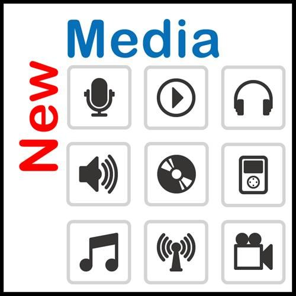
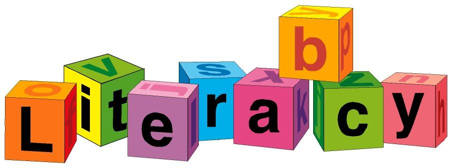

Welcome

NEW MEDIA LITERACY WORKSHOP

New Media Literacy Workshop, April 22
“New Media Literacy” is a one-day workshop that examines the theory and practice of new media in specific geopolitical sites, privileging East Asian locations without excluding comparative perspectives to the use of new media in these locations. Keen on bringing a historical perspective to the discussion of the new media, we are concerned with questions such as whether or not new media is new, what makes new media new, and if new media can be made legible through older mechanisms of reading. Also interested in examining the interdisciplinary connection of cultural and media studies with literary studies, we ask what literature and literary reading have to offer to new media, and vice versa. The study of the meaning of cultural products and cultural technology has often been institutionalized within literature departments. But this establishing of discipline historically has meant the writing off of some materials and texts by designating them as “non-literary.” New Media studies makes us rethink the meaning of literariness in relation to multiple forms of literacy beyond linguistic focus on meaning. This workshop explores the wider horizon of meaning production opened up by new media technology and investigates the available conventions of reading and writing that make cultural production legible and meaningful. While reflecting on new media as culture, this workshop is also interested in the culture of new media, i.e. the management and censorship of new media, new media and public sphere, rights and activism, and various other aspects of the social practice of new media.
Hosts:
Jonathan E. Abel
and
Shuang Shen
Keynote Speaker:
Marie Laure Ryan
Presenters:
Kukhee Choo
(Tulane University)
Heather Inwood
(Ohio State University)
Joshua Neves
(Brown University)
Alex Zahlten
(Harvard University)
Respondents:
Andrea Bachner
Michelle Rodino-Colocino